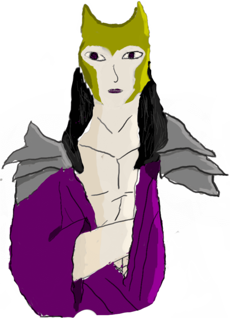

<!DOCTYPE html>
<html>
    <link rel="stylesheet" href="CSS/style.css">
</html>
<body>
    <header id="cabeçalho">
        
        <P>Hades</P>
        <nav id="catalogo">
            <p> sobre </p>
        </nav>     
    </header>
    <main id=começo class="roxo_transparente">
        <div id="img_come"></div>
        <div id="text_come">
            <h1>quem é hades</h1>
            <P>    Hades é o deus do submundo e dos mortos, ao contrário do que muitos pensam ele não é o deus da morte, isso é um equívoco comum no enquanto uma forma de dizer para não gerar esta dúvida é que hades é o deus do pós-morte.
                hades tem um equivalente romano chamado plutão, apesar das semelhanças por se tratar de um povo diferente vai ter algumas diferenças.</P> </div>
    </main>
    <section class="roxo_transparente">
        <h2>hades(reino)</h2>
        <P>    Hades é tambem como é chamado o reino do submundo alem de nome do propio rei desde reino.</P>
        <div id=rolagem>
            <li><a href="#tartaro"> tartaro</a></li> 
            <li><a href="#asfodelos"> campos asfodelos</a></li>
            <li><a href="#elisios"> campos elisios</a></li>
        </div>
        <figure></figure>
        <h3 id="tartaro">tartaro</h3>
        <figure></figure>
        <article> o Tartaro é como o inferno blibico mesma coisa de almas pegadora ou más irao para o tartaro. 
            O Tártaro era cercado por grandes muralhas e cortados por uma grande rio de lava chamado Flegetonte, ficam ali os perdedores da guerra dos titans,as Danaides, que mataram seus esposos, 
            o Sífiso, que enganara a morte e o Tântalo, que cometera sacrilégio, e outros tantos criminosos</article>
        <h3 id="asfodelos">campos asfodelos</h3>
        <figure></figure>
        <article> o campo asfodelos é como o limbo fosse só da lá.quem vai pra lá é tem não fez nada de ruim mas tambem  
            nada de bom.lá voce estaria apenas andando eternamente nas planície escuras com esporaticas arvore negras.
            O Campo de Asfódelos também servia como um território neutro, onde as almas esperariam até serem julgadas.</article>
        <h3 id="elisios">campos elisios</h3>
        <figure></figure>
        <article> os campos elisios é o paraiso sem nuvem ele tem uma aparecia de como é imaginado o jardim do edem
            Campos Elísios ou Ilha dos Bem-Aventurados, é descrito como um lugar alegre, calmo e repleto de prazeres, que primordialmente era reservado para os heróis gregos, a fim de escapar das escuridões do Hades. Porém mais tarde a ideia de que o lugar era o destino para as almas de pessoas boas foi tomando forma e se enraizou na cultura grega.
            Esse local é descrito como o paraíso grego, um espaço de temperaturas amenas, relevo plano e de difícil identificação, localizado nos extremos do planeta Terra.</article>      
    </section>
    <section class="roxo_transparente">
        <h2>familia</h2>
        <P>    a arvore gerealogica do hades é complicacda como em toda mitologia, não vou me aprofundar muito nela vou apenas falar 1 geração antes ou depois dele</P>
        <h3>conjuge</h3>
        <li><a href="https://www/mysite/mitologia/persefone">Persefone:</a> é a esposa e sobrinha de hades,persefone foi sequestrada por hades para se casar com ele.</li>
        <p>pais</p> 
        <li><a href="https://www/mysite/mitologia/cronos">Cronos:</a> é o pai de hades, divindade do tempo e um dos principais participantes da guerra dos titans, e de certa forma o causador do da guerra dos titans;</li> 
        <li><a href="https://www/mysite/mitologia/Reia">Reia:</a> é a mãe de hades, conhecida como a mãe dos deuses, dinvidade da fertilidade e quem salvou zeus.</li>          
        <h3>irmãos</h3>
        <li><a href="https://www/mysite/mitologia/zeus">Zeus:</a> deus do trovão;</li>
        <li><a href="https://www/mysite/mitologia/hestia">héstia:</a> deusa do lar;</li> 
        <li><a href="https://www/mysite/mitologia/quiron">Quiron:</a>é um centauro.</li>
        <li><a href="https://www/mysite/mitologia/Poseidon">Poseídon:</a> deus do mar;</li>   
        <li><a href="https://www/mysite/mitologia/hera">Hera:</a> deusa da boda e maternidade;</li>
        <li><a href="https://www/mysite/mitologia/demeter">Deméter:</a> irma e sogra de hades,deusa da colheita;</li>
        <h3>filhos</h3>
        <li><a href="https://www/mysite/mitologia/marcaria">Macária</a>: deusa da boa morte;</li>
        <li><a href="https://www/mysite/mitologia/melinoe">Melinoe</a>: deusa dos fantasmas, oferendas e cerimônias fúnebres.</li>
    </section>
    <section class="roxo_transparente">
        <h2>recomendaçoes</h2>
        <P> 1-cavaleiros dos zodiacos. Porque é uma animação muito boa e hades aparece</P>
        <p> 2-percy jackson.porque fala sobre a mitologia grega em geral</p>
        <p> 3-hazbin hotel. uma animação sobre o inferno e como os demonios vivem nele</p>
    </section>
    <section class="preto">
        <h2>sobre o autor desse site</h2>
        <p>     meu nome é paulo  tenho 15 eu estou no meu primeiro ano da ifsp guarulhos, este site foi criado para um tabalho da escola a ideia é criar um site com as cores e sobre de um deus que foi dado atraves de um quiz para curiosidade aqui esta como era o desenho antes de passar para o computador </p> 
        <figure></figure>
        <p>contato:lima.azevedo@aluno.ifsp.edu.br</p>
    
    </section>
</body> 


